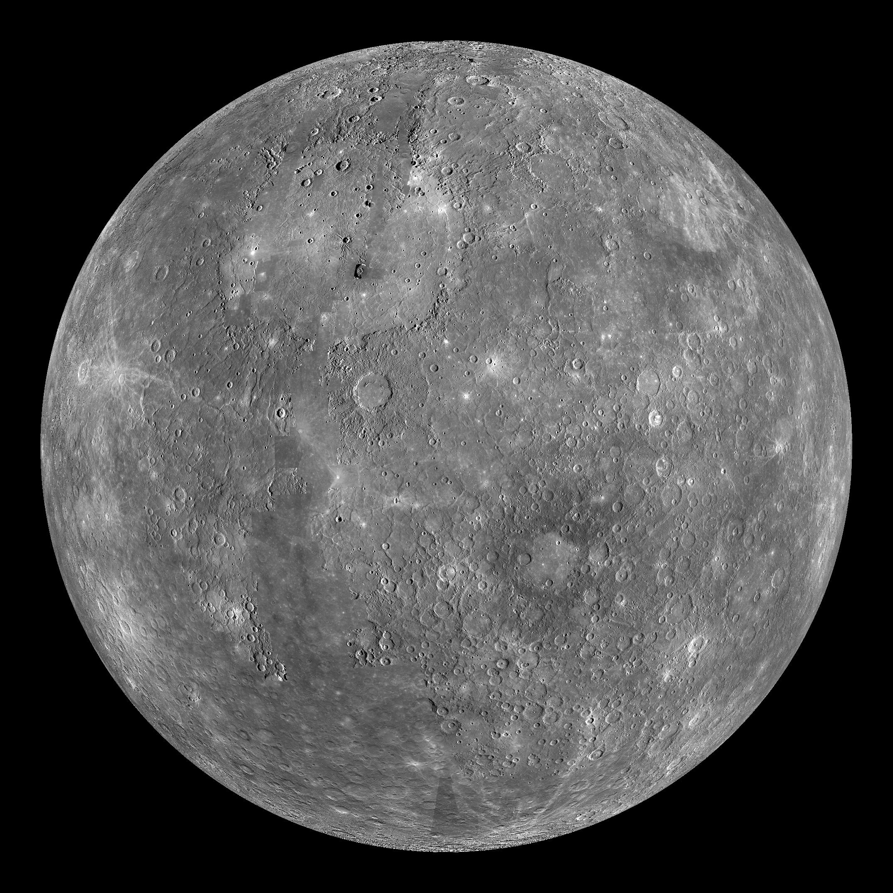

Mercury
Small planet. Fast years. Frequent birthdays.
A Rocky World


Five Facts About Mercury
- Mercury is the closest planet to the Sun.
- Mercury is the smallest planet in our solar system.
- Mercury completes an orbit around the Sun in about 88 Earth days.
- Mercury has no moons or rings.
- Despite being closest to the Sun, Mercury is not the hottest planet. Venus is hotter.